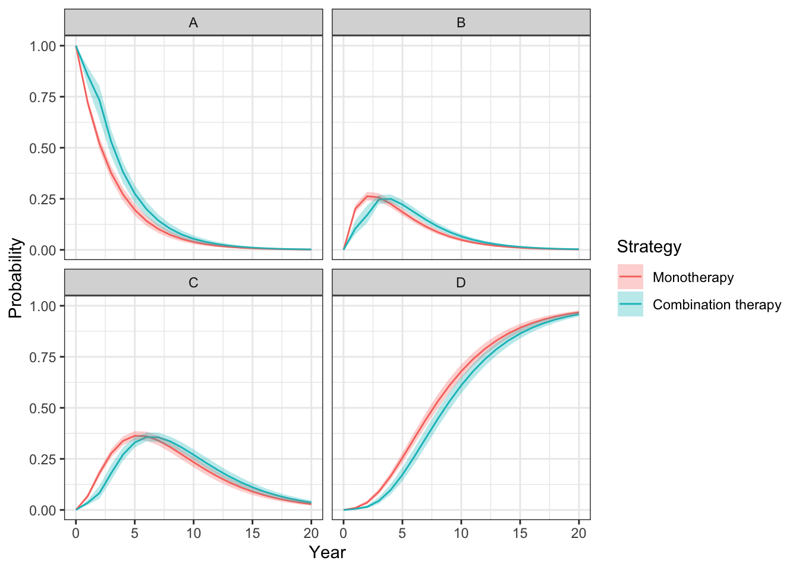
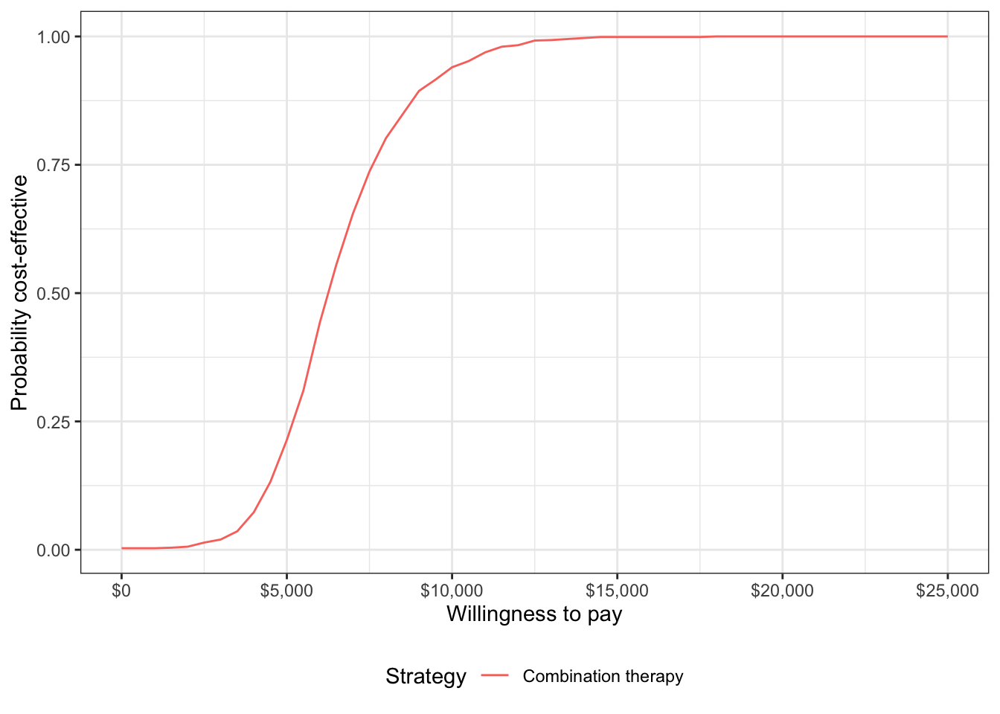

Discrete time state transition model for HIV treatment
2019-10-12
Source:vignettes/dtstm-hiv.Rmd
dtstm-hiv.Rmd1 Overview
This example analysis replicates the HIV model developed by Chancellor et al. and used for didactic purposes in the Decision Modeling for Health Economic Evaluation textbook. In doing so, we show how Stan, a probabilistic programming language for Bayesian inference, can be integrated with hesim.
The analysis compares two treatment strategies, zidovudine montherapy and zidovudine + lamivudine combination therapy. Patients are assumed to only use lamivudine for 2 years before switching back to monotherapy.
The model is a cohort discrete time state transition model (DTSTM) (i.e., a Markov model) with 4 health states. Ordered from worst to best to worst, they are: State A (CD4 cells > 200 and < 500 cells/mm3), State B (CD4 < 200 cells/mm3), State C (AIDS), and State D (death). The model assumes that patients can transition to any state that is more severe (i.e., progress) but cannot transition back to a more severe state.

We set up the model by specifying the treatment strategies and the (non-death) health states. The model is simulated for 1 representative patient.
library("hesim")
library("data.table")
strategies <- data.table(strategy_id = 1:2,
strategy_name = c("Monotherapy", "Combination therapy"))
patients <- data.table(patient_id = 1)
states <- data.table(state_id = 1:3,
state_name = c("A", "B", "C")) # Non-death health states
hesim_dat <- hesim_data(strategies = strategies,
patients = patients,
states = states)
print(hesim_dat)## $strategies
## strategy_id strategy_name
## 1: 1 Monotherapy
## 2: 2 Combination therapy
##
## $patients
## patient_id
## 1: 1
##
## $states
## state_id state_name
## 1: 1 A
## 2: 2 B
## 3: 3 C
##
## attr(,"class")
## [1] "hesim_data"2 Parameter estimation
Since we will estimate the parameters in a Bayesian fashion to facilitate a probabilistic sensitivity analysis (PSA), we specify the number of parameter samples.
2.1 Transition probabilities
Counts of transitions at yearly intervals between each of the 4 health states were available from a longitudinal dataset from Chelsea and Westminister hospital.
trans_mono <- matrix(c(1251, 350, 116, 17,
0, 731, 512, 15,
0, 0, 1312, 437,
0, 0, 0, 469),
ncol = 4, nrow = 4, byrow = TRUE)
colnames(trans_mono) <- rownames(trans_mono) <- c("A", "B", "C", "D")
print(trans_mono)## A B C D
## A 1251 350 116 17
## B 0 731 512 15
## C 0 0 1312 437
## D 0 0 0 469The transition probabilities from state \(r\) to each of the 4 states (State A, State B, State C, and State D) can be modeled using Dirichlet distributions, which are parameterized by a vector of concentration parameters \(\alpha = (\alpha_{r1}, \alpha_{r2}, \alpha_{r3}, \alpha_{r4})\). The Dirichlet distribution is particularly useful for modeling uncertainty in the transition probabilities because it is a conjugate prior for the multinomial distribution. The posterior distribution of \(\alpha\) consequently follows a Dirichlet distribution which can be thought of as the “effective sample size” for each transition (see Appendix).
Treatment effects are defined in terms of the relative risk, which is assumed to reduce the probability of all transitions to a more severe health state by an equal amount. We work with the log relative risk since it is approximately normally distributed. The estimated relative risk of disease progression is 0.509 (95% CI 0.365 to 0.710). We can then calculate the mean and standard error on the log scale.
We compute the posterior distribution of transition probabilities for both monotherapy and combination therapy using Stan. Transition probabilities for monotherapy are drawn from Dirichlet distributions given the concentration parameters \(\alpha\) and transition probabilities for combination therapy are computed by applying the relative risks to the transition probability matrix for monotherapy. Since the parameters of all distributions used for the PSA are known, there is no need to use Markov Chain Monte Carlo to estimate the parameters. We can consequently use the “generated quantities” block for random number generation to speed up computation time.
DTSTMs can be simulated in hesim using tparams_transprobs objects. To facilitate integration with Bayesian software like Stan, tparams_transprobs objects can be created from 4 dimensional arrays of transition probability matrices. The 1st dimension indexes random parameter samples, the 2nd dimension indexes treatment strategies, the third dimension indexes patients, and the fourth dimension indexes time intervals. In other words, the posterior distribution of transition probability matrices can vary across patients, treatment strategies, and time periods. The latter allows for time-inhomogeneous Markov models; in this example transition probabilites with combination therapy change after 2 years when patients move back to monotherapy.
functions {
// Function to apply a relative risk to a transition probability matrix
matrix adjust_p(matrix p, real rr){
int n_cols = cols(p);
int n_rows = rows(p);
matrix[n_rows, n_cols] p_new = p;
// Adjust each row of matrix using relative risks
for (i in 1:n_rows){
p_new[i, (i + 1):n_cols] = rr * p[i, (i + 1):n_cols];
p_new[i, i] = 1 - sum(p_new[i, (i + 1):n_cols]);
}
return(p_new);
}
}
data {
int<lower=0> n_strategies; // Number of treatment strategies
int<lower=0> n_patients; // Number of patients
int<lower=0> n_times; // Number of time intervals
matrix[4, 4] alpha; // Concentration parameters of Dirichlet distributions
real lrr_mean; // Mean of the log relative risk
real lrr_se; // Standard error of the log relative risk
}
transformed data{
matrix[4, 4] t_alpha = alpha'; // Transpose alpha. This is needed to randomly
// sample from the Dirichlet distribution in Stan.
}
generated quantities {
matrix[4, 4] p_mono; // Transition probability matrix for monotherapy
matrix[4, 4] p_combo; // Transition probability matrix for combination therapy
matrix[4, 4] p[n_strategies, n_patients, n_times]; // 4D array to pass to hesim
// Draw relative risk
real rr = lognormal_rng(lrr_mean, lrr_se);
// Draw baseline transition probability matrix for monotherapy
for (i in 1:4){
p_mono[i, ] = dirichlet_rng(col(t_alpha, i))';
}
// Compute transition probability matrix for combination therapy using
// relative risk
p_combo = adjust_p(p_mono, rr);
// Store transition probabilitiy matrices in 4D array
p[1, 1, 1] = p_mono; // Monotherapy, time interval 1
p[2, 1, 1] = p_combo; // Combination therapy, time interval 1
p[1, 1, 2] = p_mono; // Monotherapy, time interval 2
p[2, 1, 2] = p_mono; // Combination therapy, time interval 2 (treatment is
// assumed to only last 2 years)
}stan_data <- list(
n_strategies = nrow(strategies),
n_patients = nrow(patients),
n_times = 2,
alpha = alpha_mono,
lrr_mean = lrr_mean,
lrr_se = lrr_se
)
library("rstan")
rstan_options(auto_write = TRUE)
fit <- stan(
file = "dtstm-hiv.stan",
data = stan_data,
chains = 1,
warmup = 0,
iter = n_samples,
cores = 2,
algorithm = "Fixed_param"
)##
## SAMPLING FOR MODEL 'dtstm-hiv' NOW (CHAIN 1).
## Chain 1: Iteration: 1 / 1000 [ 0%] (Sampling)
## Chain 1: Iteration: 100 / 1000 [ 10%] (Sampling)
## Chain 1: Iteration: 200 / 1000 [ 20%] (Sampling)
## Chain 1: Iteration: 300 / 1000 [ 30%] (Sampling)
## Chain 1: Iteration: 400 / 1000 [ 40%] (Sampling)
## Chain 1: Iteration: 500 / 1000 [ 50%] (Sampling)
## Chain 1: Iteration: 600 / 1000 [ 60%] (Sampling)
## Chain 1: Iteration: 700 / 1000 [ 70%] (Sampling)
## Chain 1: Iteration: 800 / 1000 [ 80%] (Sampling)
## Chain 1: Iteration: 900 / 1000 [ 90%] (Sampling)
## Chain 1: Iteration: 1000 / 1000 [100%] (Sampling)
## Chain 1:
## Chain 1: Elapsed Time: 0 seconds (Warm-up)
## Chain 1: 0.010759 seconds (Sampling)
## Chain 1: 0.010759 seconds (Total)
## Chain 1:fit_params <- extract(fit)2.2 Utility and costs
Utility and cost parameters could be sampled using Stan; however, the cost and utility specifications are simple enough in this example that it is more straightforward to only use R. The cost-effectiveness analysis is based on life-years, meaning that each health state is assigned a utility value of 1.
utility_tbl <- stateval_tbl(data.table(state_id = states$state_id,
est = rep(1, nrow(states))),
dist = "fixed",
hesim_data = hesim_dat)The costs of zidovudine and lamivudine are $2,278 and $2,086.50, respectively. Drug costs in the monotherapy treatment strategy only include the cost of zidovudine whereas the combination therapy includes the costs of both zidovudine and lamivudine. However, as noted above, patients are only assumed to use lamivudine for two years. Time-varying drug costs are specified by allowing costs to vary in different time intervals. (Note that time intervals are open on the right so the second time interval must start at a time strictly greater than 2.)
# Drug costs
cost_zido <- 2278
cost_lam <- 2086.50
drugcost_tbl <- stateval_tbl(data.table(strategy_id = rep(strategies$strategy_id,
each = 2),
est = c(cost_zido, cost_zido,
cost_zido + cost_lam, cost_zido),
time_start = rep(c(0, 2.01), 2)),
dist = "fixed",
hesim_data = hesim_dat) Medical costs are split into direct medical and community medical costs. Costs vary across the three non-death health states and are assumed to follow a gamma distribution.
# Direct medical costs
dmedcost_tbl <- stateval_tbl(data.table(state_id = states$state_id,
mean = c(1701, 1774, 6948),
se = c(1701, 1774, 6948)),
dist = "gamma",
hesim_data = hesim_dat)
# Community medical costs
cmedcost_tbl <- stateval_tbl(data.table(state_id = states$state_id,
mean = c(1055, 1278, 2059),
se = c(1055, 1278, 2059)),
dist = "gamma",
hesim_data = hesim_dat) 3 Simulation
3.1 Constructing the economic model
3.1.1 Disease model
The health state transition model is instantitated from a tparams_transprobs created using the array of transition probability distributions sampled using Stan. Combination therapy includes lamivudine during years 0-2 but is equivalent to monotherapy therafter. At the start of the model, all patients are assumed to be in State A.
transmod_params <- tparams_transprobs(fit_params$p, time_start = c(0, 2.01))
transmod <- CohortDtstmTrans$new(params = transmod_params,
start_stateprobs = c(1, 0, 0, 0))3.1.2 Utility and cost models
Models for utility and costs are easily created using the create_StateVals() function.
# Utility
utilitymod <- create_StateVals(utility_tbl, n = n_samples)
# Costs
drugcostmod <- create_StateVals(drugcost_tbl, n = n_samples)
dmedcostmod <- create_StateVals(dmedcost_tbl, n = n_samples)
cmedcostmod <- create_StateVals(cmedcost_tbl, n = n_samples)
costmods <- list("Drug" = drugcostmod,
"Direct medical" = dmedcostmod,
"Community medical" = cmedcostmod)3.2 Simulating outcomes
3.2.1 Health state probabilities
State occupancy probabilities are generated by simulating the discrete time Markov chain. As expected, patients survive longer with combination therapy.
econmod$sim_stateprobs(n_cycles = 20)
# Plot
library("ggplot2")
theme_set(theme_bw())
stateprob_summary <- econmod$stateprobs_[, .(prob_mean = mean(prob),
prob_lower = quantile(prob, .025),
prob_upper = quantile(prob, .975)),
by = c("strategy_id", "state_id", "t")]
stateprob_summary[, strategy_name := factor(strategy_id,
labels = strategies$strategy_name)]
ggplot(stateprob_summary, aes(x = t, y = prob_mean)) +
geom_line(aes(col = strategy_name)) +
geom_ribbon(aes(x = t, ymin = prob_lower, ymax = prob_upper,
fill = strategy_name), alpha = .3) +
facet_wrap(~factor(state_id, labels = c(states$state_name, "D"))) +
xlab("Year") + ylab("Probability") +
scale_fill_discrete("Strategy") + scale_color_discrete("Strategy")
3.2.2 Costs and QALYs
Costs and quality-adjusted life-years (QALYs) are computed by integrating the previously simulated state probabilities. To maintain consistency with Chancellor et al., we approximate the integral with a right Riemann sum, which is simply a sum of costs and QALYs measured at the right endpoint of each interval (e.g., costs between model cycle 0 and 1 are measured at model cycle 1).
4 Decision analysis
A decision analysis is performed by comparing combination therapy to monotherapy.
ce_sim <- econmod$summarize()
wtp <- seq(0, 25000, 500)
icea_pw_out <- icea_pw(ce_sim, comparator = 1, dr_qalys = 0, dr_costs = .06,
k = wtp)The incremental cost-effectiveness ratio (ICER) estimated using means from the PSA is $6,352, which is very close to the estimate from the deterministic analysis from Chancellor et al.
icer_tbl(icea_pw_out)## 1 2
## Incremental QALYs "-" "0.93 (0.57, 1.21)"
## Incremental costs "-" "5,890 (3,158, 9,984)"
## Incremental NMB "-" "40,469 (22,694, 54,550)"
## ICER "-" "6,352"
## Conclusion "-" "Cost-effective"A cost-effectiveness acceptability curve shows that the probability that combination therapy is more cost-effective than monotherapy increases quickly with the willingness to pay (WTP) for a QALY. At $10,000, the probability is 0.94 and approaches 1 at slightly higher WTP values.
ggplot(icea_pw_out$ceac,
aes(x = k, y = prob,
col = factor(strategy_id, labels = strategies$strategy_name[-1]))) +
geom_line() + xlab("Willingness to pay") +
ylab("Probability cost-effective") +
scale_x_continuous(breaks = seq(0, max(wtp), 5000), label = scales::dollar) +
theme(legend.position = "bottom") + scale_colour_discrete(name = "Strategy")
5 Appendix: Dirichlet distribution
The multinomial distribution is a discrete probability distribution for the number of successes for each of k mutually exclusive categories in n trials. The probabilities of the categories are given by \(\pi_1,\ldots, \pi_k\) with \(\sum_{j=1}^k \pi_j=1\) and each \(\pi_j\) defined on \([0,1]\). The Dirichlet distribution is parameterized by the concentration parameters \(\alpha_1,\ldots, \alpha_k\) with \(\alpha_j > 0\). Letting \(x_1,\ldots, x_k\) denote the number of successes in each category, the prior distribution and likelihood are,
\[ \begin{aligned} p(\pi_1,\ldots,\pi_k |\alpha_1,\ldots, \alpha_k) = \text{Dirichlet}(\alpha_1,\ldots,\alpha_k) \\ p(x_1,\ldots,x_k | \pi_1,\ldots,\pi_k) = \text{Multin}(n, \pi_1,\ldots,\pi_k). \end{aligned} \]
The posterior distribution for \(\pi_1,\ldots,\pi_k\) is then given by,
\[ p\left(\pi_1,\ldots,\pi_k| x_1,\ldots,x_k, \alpha_1,\ldots,\alpha_k \right) = \text{Dirichlet}\left(\alpha_1 + x_1, \ldots, \alpha_k + x_k\right). \]